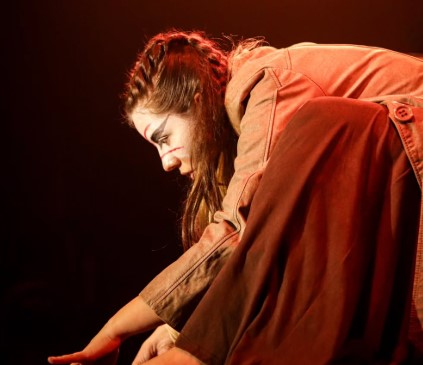
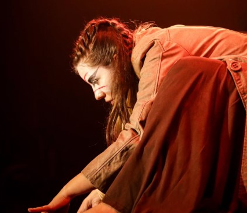

O Cubo de Erika: metáforas de uma mente só (2025)
Sete vozes em conflito
Sinopse
Onde você vai quando não pode sair de si mesmo? Erika, em sua solidão, encarna suas angústias e esperanças em seis vozes poderosas que dominam seu mundo. Nesta peça, cada emoção é um monólogo de um personagem em conflito, cada memória, uma peça em um jogo de xadrez existencial. Uma meditação urgente sobre quem somos quando destilamos tudo o que carregamos – e o que sobra quando nada mais resta, exceto nossa própria verdade.
Em seu quarto, Erika trava sua batalha mais íntima. Para enfrentar o caos interior, ela dá voz e forma aos seus conflitos: a Saudade, o Instinto, a Ausência, a Guerra, a Memória e a Narrativa. Esse drama poético é um despojamento de uma alma, peça por peça, em uma jornada rumo ao silêncio e à descoberta de que a verdade mais profunda habita o vazio que resta quando todas as vozes se calam
Galeria da Produção
 
